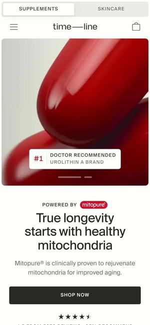

먼저 보세요01Timeline (Mitopure)
와 포인트첫 화면을 붉은 캡슐 몇 알의 초근접 사진 한 장으로 채웁니다. 문장은 한 줄('진짜 롱제비티는 건강한 미토콘드리아에서'), 이어서 제품 상자를 든 손 → 사람 장면 → 숫자 한 줄. 색은 빨강 하나에 흰색·연회색뿐.
이너에라라면붉은 캡슐 자리에 패키지의 붉은 구슬과 궤도를 크게. 흰 바탕에 크림슨 한 색, 문장은 '5가지 핵심 원료로 설계한 데일리 포뮬러'. 숫자 칸은 원료 5·한 포 20 g 같은 사실만 — 2안의 1순위.